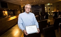

Karl Anders Gustav Lidén
Fotograf och journalist vid Allehanda.se.
| Född: | 1955 Kristineberg 1:1, Kristineberg, Björksele fs, Lycksele sn. [1] |
|---|
| Levde: | 1956 Kristineberg 1:9, Kronåsv 12, Kristineberg, Björksele fs, Lycksele sn. [2] |
|---|
| Levde: | 1971 Bollstabruk, Ytterlännäs fs, Ytterlännäs kn. [3] |
|---|
| Levde Sambo: | 1991 Limsta 18:156, Norrlimstav 24, Kramfors, Gudmundrå fs, Kramfors kn. [4] |
|---|
| Levde: | 2016 Norrlimstavägen 24, Kramfors, Gudmundrå fs, Kramfors kn. [5] |
|---|
| Barn: |
|---|
| Jenny Katharina E Lidén Sjölund (1979 - ) |
| Jonas Karl Edvin Lidén Sjölund (1983 - ) |
Noteringar
Anders Lidén
Har jobbat på Tidningen Ångermanland
Har jobbat på Allehanda Media
Har jobbat på Allehanda.se
Har jobbat på Allehanda Media AB
Har studerat vid Umeå Universitetet
Anders Lidén har bl.a. sammanfattat och skrivit Lidénskrönikan, som presentats i Skelleftebygdens medlemstidning "Roten". För övrigt så är han en hängiven journalist i Ångermanland med många värdefulla artiklar. Det är Anders Lidén och jag, Jan Fredman, som genetiskt bevisar att Augusta Charlotta Fredmans utomäktenskapliga son Frans Edvard Fredman är en ättling till Johan Olof Lidén. Augusta Charlotta tjänade under sex år som piga i klockarfamiljen Lidén i Norsjö fs. Det intressanta är också att när Johan (Janne) Lidén gifte sig, så döptes den förste sonen till just Johan Edvard* född och död 1875-06-23.
Personhistoria
| Årtal | Ålder | Händelse |
|---|
| 1955 |
|
Födelse 1955 Kristineberg 1:1, Kristineberg, Björksele fs, Lycksele sn [1] |
| 1956 |
|
Partnern Karin Birgitta Catarina Sjölund föds 1956 Sollefteå, Sollefteå fs, Sollefteå stad [4] |
| 1956 |
|
Levde 1956 Kristineberg 1:9, Kronåsv 12, Kristineberg, Björksele fs, Lycksele sn [2] |
| 1964 |
|
Brodern Karl Håkan Lidén föds 1964 Kristineberg 1:9, Kronåsv 12, Kristineberg, Björksele fs, Lycksele sn [6] |
| 1971 |
|
Levde 1971 Bollstabruk, Ytterlännäs fs, Ytterlännäs kn [3] |
| 1979 |
|
Dottern Jenny Katharina E Lidén Sjölund föds 1979 Umeå, Ålidhem fs, Umeå kn [4] |
| 1983 |
|
Sonen Jonas Karl Edvin Lidén Sjölund föds 1983 Ytterlännäs fs, Ytterlännäs kn (Y) [4] |
| 1991 |
|
Levde Sambo Karin Birgitta Catarina Sjölund 1991 Limsta 18:156, Norrlimstav 24, Kramfors, Gudmundrå fs, Kramfors kn [4] |
| 1993 |
|
Fadern Karl Torsten Lidén dör 1993-10-01 Falken 5, Radhusv 1 B, Kramfors, Gundmundrå fs, Kramfors kn [7] |
| 2010 |
|
Modern Eivor Elisabet Pettersson dör 2010-01-31 Norrlimstavägen 24, Kramfors, Gudmundrå fs, Kramfors kn [8] |
| 2016 |
|
Levde Karin Birgitta Catarina Sjölund 2016 Norrlimstavägen 24, Kramfors, Gudmundrå fs, Kramfors kn [5] |
Dokument
Källor
| [1] | Mtl Sveriges befolkning 1955 |
| |
| | |
| [2] | Mtl Sveriges befolkning 1956 |
| |
| | |
| [3] | Mtl Västernorrlands län 1971 |
| |
| | |
| [4] | Mantalslängd 1991, Västernorrlands län |
| |
| | |
| [5] | https://www.ratsit.se/sok/avancerat/person |
| |
| | |
| [6] | Mtl Västernorrlands län 1971, Mtl Sveriges befolkning 1956 |
| |
| | |
| [7] | RTB 93 / SPAR 92f / SPAR 95 |
| |
| | |
| [8] | FK 13 / man91 |
| |
|
 |
|
| |
|  |
| Anders Lidén |
|

{kind=link}